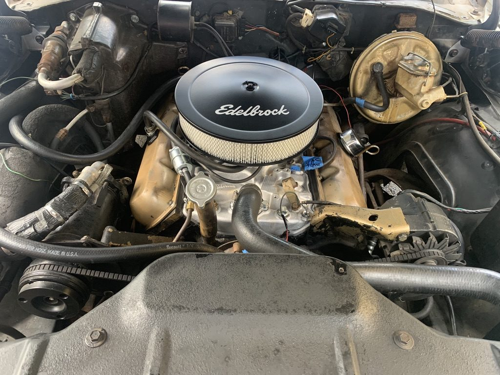
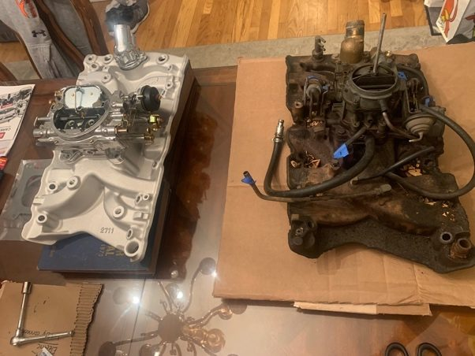
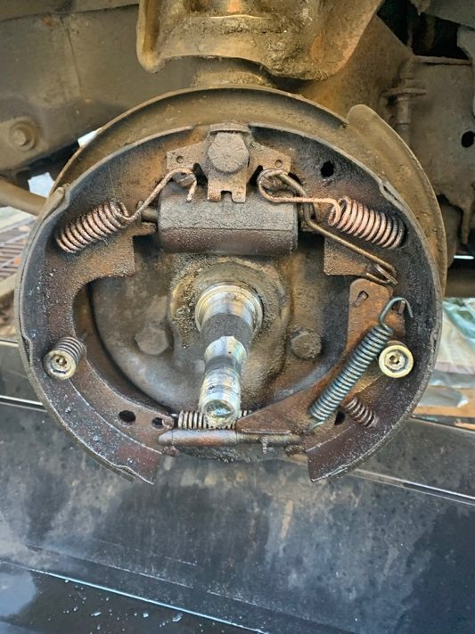
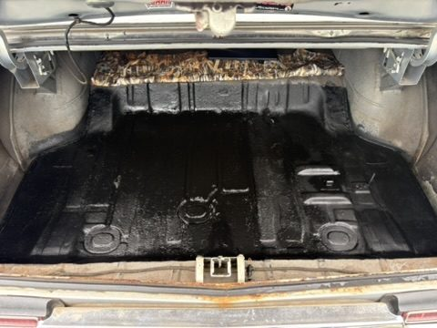

A non-operational 1968 Oldsmobile Cutlass Supreme brought back to a reliable daily driver across more than 100 documented hours, with all parts sourcing and repair research self-directed. A fifty-seven-year-old car presents a specific engineering constraint: parts are discontinued and documentation is thin, so several components had to be fabricated rather than ordered. This is where I first learned to work a fault backward to its cause instead of guessing — a habit that carried directly into every analysis project that followed.
- 100+documented hours
- 1968Cutlass Supreme
- 7systems diagnosed & repaired





Diagnostic & fabrication process
- Diagnosed faults across braking, ignition, fuel-delivery, cooling and electrical systems through systematic root-cause troubleshooting, isolating a chronic carburetor choke malfunction and repeated window crank failures to their underlying causes.
- Fabricated custom replacement components when OEM parts were discontinued, working from the failed original as the reference geometry.
- Pressure-tested the vacuum and cooling systems after repair to verify the leak was closed rather than assuming it.
- Self-directed all research and parts sourcing, cross-referencing service documentation across a 100+ hour build.
Brakes, hubs & suspension
- Started at the corners: drum brakes, brake cylinder and brake lines through to the front hubs, restoring stopping performance and safe alignment under load.
- Went over the suspension component by component — bushings inspected and replaced, everything greased — as part of a full rundown of the car before trusting it on the road.
Fuel & ignition
- Before replacing anything, troubleshot and repaired the original carburetor's choke system, which took a fair amount of research on a system nobody documents any more.
- Replaced the original carburetor and intake manifold once the fault was understood rather than swapping parts at it.
- Installed an HEI distributor with new spark plugs and spark wires, rebuilding the ignition side end to end.
Electrical & instrumentation
- Rewired power for a stereo system and additional speakers.
- Worked through the wiring harness to confirm every instrument in the gauge cluster was getting both power and the correct signal — an accurate gauge is worth more than a gauge that merely lights up.
- Wired in a heat sensor for the radiator so engine temperature could actually be read from the driver's seat.
Interior, body & sealing
- Stripped the interior and treated the floors with rust-inhibiting paint, then did the same through the trunk — repairing the structural corrosion before any mechanical reassembly went back in on top of it.
- Repaired window sills and replaced trunk and door seals, which is what keeps the water out and stops the corrosion starting over.
Climate — a system that runs on vacuum
- The car's heating and air conditioning is entirely vacuum-operated, with no electronics involved: engine vacuum actuates the controls and the duct doors.
- Traced and reconnected the vacuum lines so each pneumatic actuator and duct received the right signal, then pressure-tested the vacuum and cooling systems — heater core included — to confirm the leaks were closed rather than assume it.
What I took from it
This car is where I learned to work a fault backward instead of throwing parts at it. Fifty-seven years old means the documentation is thin and half the parts are discontinued, so most repairs started with research and ended with something I had to make or adapt. It also taught me that a system is only fixed once you have tested it — pressure-testing a vacuum line takes ten minutes and saves you from chasing the same fault twice.
- Systematic fault diagnosis
- Custom fabrication
- Brake & front-end service
- Ignition & fuel rebuild
- Corrosion repair
- Pressure testing